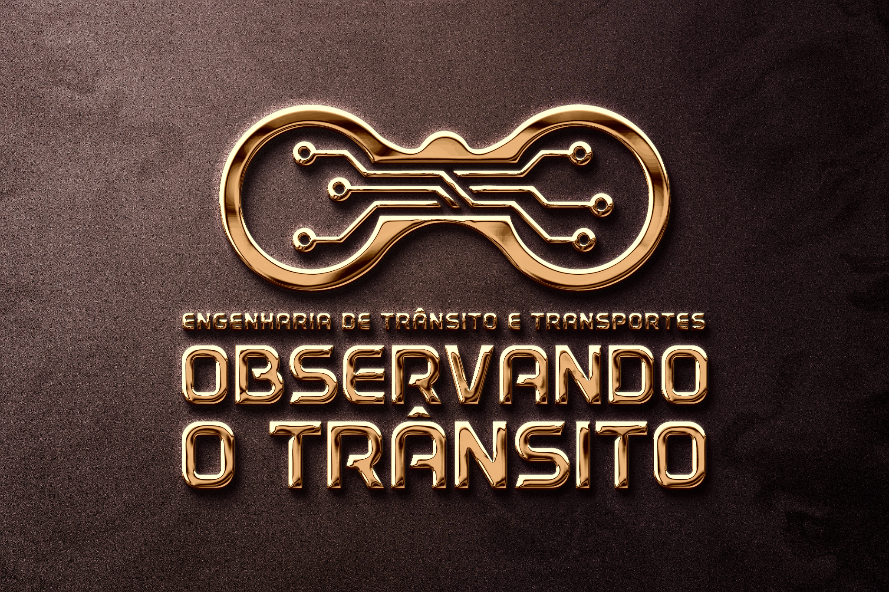
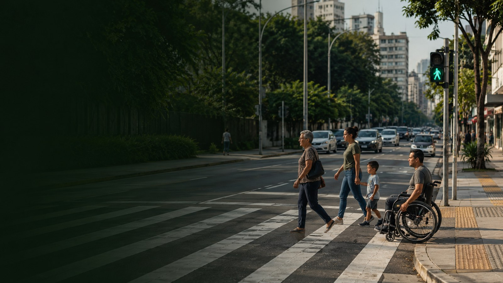

Conecte-se com a Observando o Trânsito

Julio Augusto Ferreira
Sócio-Diretor
Observando o Trânsito
Abra o contato e confirme em Contatos. Se o celular baixar um arquivo, toque nele para adicionar.
Revisar os dados antes de salvarImagens da nossa apresentação
Um olhar sobre a mobilidade
Uma imagem a cada 5 segundos. Explore a sequência e ative a música, se desejar.

Carregando imagem…
1 / 34
Verificando os recursos disponíveis no seu navegador.